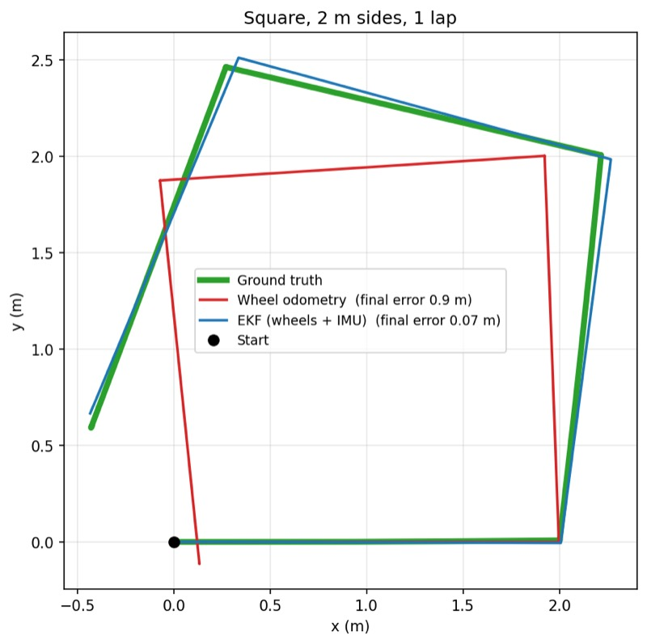
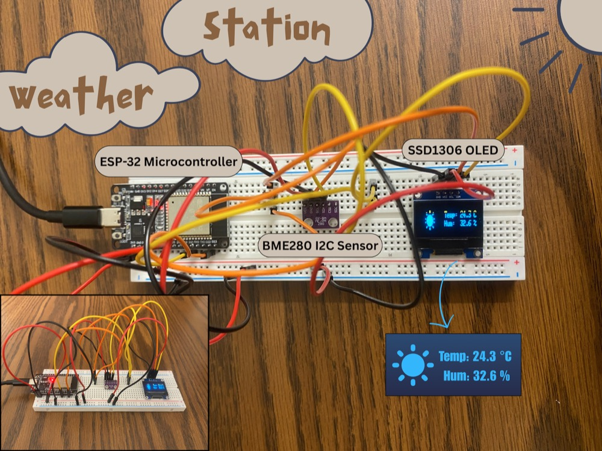

Projects
AnySkin Slip Detection
Slip detection from magnetic tactile sensor data using USDConvNetLite, a ~5k-parameter residual CNN small enough for real-time use on embedded hardware. Compares raw, FFT, and high-pass filtered inputs on the Pollen Robotics AnySkin dataset, reaching 83.2% accuracy under leave-one-object-out evaluation.
View on GitHubSkills: Python · PyTorch · Machine Learning · Tactile Sensing · Signal Processing

Wheel Odometry + IMU Sensor Fusion with an EKF
A simulated differential-drive robot in Gazebo that fuses wheel odometry and gyroscope data with an Extended Kalman Filter. Cut final position error on a 2 m square from 0.90 m to 0.075 m, and was stress-tested with injected sensor faults (spikes, dropouts, wheel slip) and covariance tuning.
View on GitHubSkills: ROS 2 · Gazebo · Python · Sensor Fusion · Kalman Filtering

Weather Station with OLED HMI
A real-time environmental monitoring system on an ESP-32 that reads a BME280 sensor and shows temperature and humidity on an SSD1306 OLED, with weather icons that change based on readings. Both devices share one I2C bus, with UART telemetry for debugging.
View on GitHubSkills: C++ · Arduino · ESP-32 · I2C · UART · Sensors